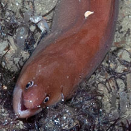
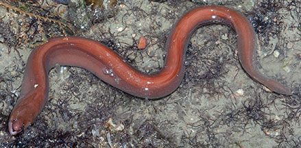
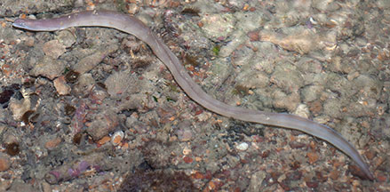
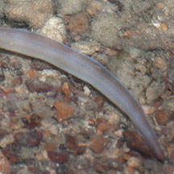

|
|
| fishes text index | photo index |
| Phylum Chordata > Subphylum Vertebrate > fishes > Family Muraenidae |
| Brown
moray eel Uropterygius concolor* Family Muraenidae updated Sep 2020 Where seen? This plain, uniformly coloured snake-like fish is sometimes seen on some of our shores, near reefs and rubble. Elsewhere, it is found in mangrove swamps, brackish rivers, and shallow coral reefs. Features: To about 50cm. Body long and rather flattened sideways. No pelvic or pectoral fins. Dorsal and anal fins extend over the entire length of the long body and are continuous with the tail fin, resulting in the typical eel-like profile. Its fins are mainly found towards the tail. Instead of scales, it has thick, smooth skin. Eyes small. Jaws filled with lots of sharp teeth. A pair of tubular nostrils at the tip of the snout, and small circular gill openings. Uniformly drab brown without any spots or markings on the body, the tip of the tail may be yellow. It swims by undulating its muscular body in S-shapes, rather like a snake. Sometimes mistaken for sea snakes or eels. Here's more on how to tell apart sea snakes, eels and eel-like animals. |
 No pelvic fins |
 Tuas, Apr 04 |
|
 Terumbu Pempang Tengah, Apr 12 |
 Fins mostly towards the tail. |
|
*identification needs confirmation
| Brown moray eels on Singapore shores |
On wildsingapore
flickr
|
| Other sightings on Singapore shores |
Links
|